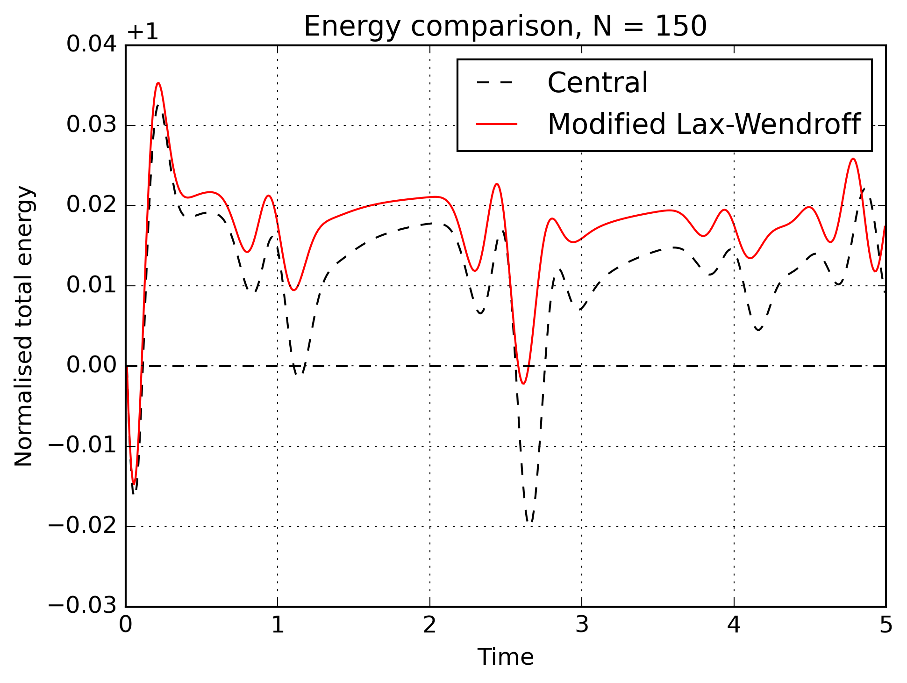
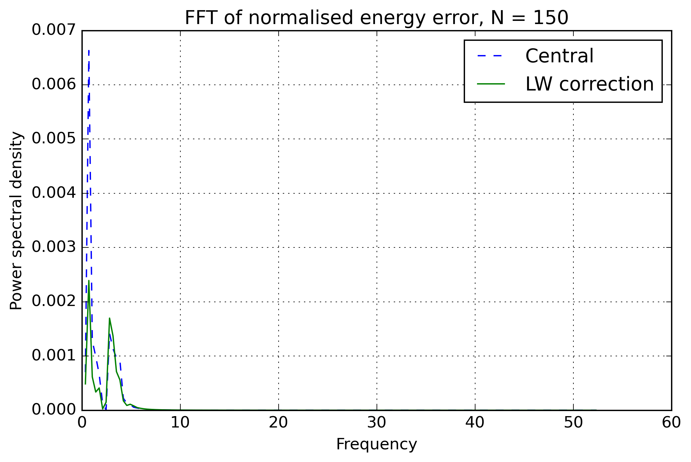
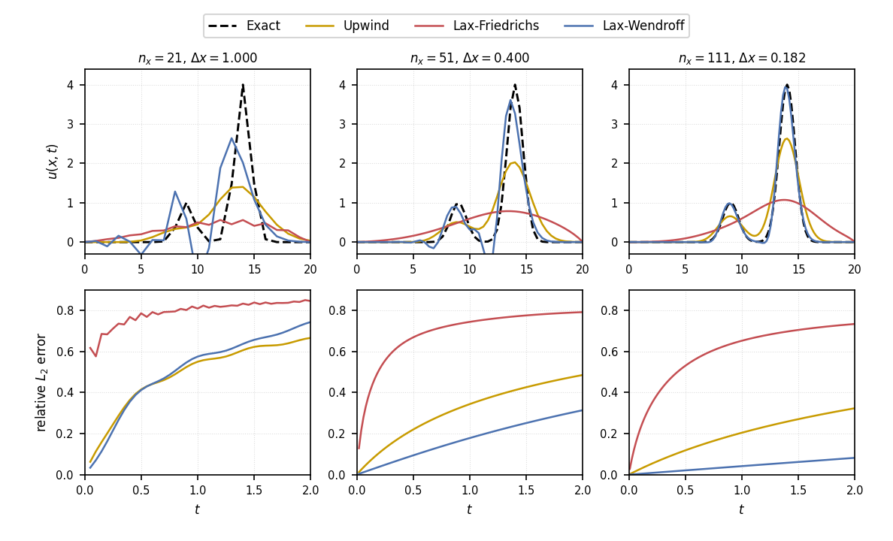

Contact
Hamza H
Aerospace engineering graduate interested in computational fluid dynamics, numerical methods, fluid mechanics, and engineering software.
Email: hamza78624@icloud.com
I will strive to reply within a day.
This website is a compact record of my numerical solvers, engineering tools, research notes, plots, and development logs.
Overview
This site is a working notebook for my aerospace and numerical-methods projects. I use it to record what I have built, what failed, what improved, and what each result taught me. The focus is not glossy presentation; it is the technical path from simple schemes to more realistic flow problems.
My current work is centred on self-written solvers. I have been building finite-difference models for 1D advection, 2D wave propagation, and incompressible Navier-Stokes flow. The aim is to understand the numerical behaviour directly: stability limits, numerical viscosity, dispersion, boundary-condition sensitivity, pressure projection, and energy conservation.
The main numerical project at the moment is a 2D incompressible flow solver for flow past a square cylinder. It uses a Chorin-style pressure projection, central differences for pressure and diffusion, adaptive time stepping, and directional upwinding for the convective terms. The page records both the result and the reasoning behind the method.
I also develop EasyTunnel, a study tool for preliminary sizing of low-speed open-circuit wind tunnels. It links test-section conditions, area ratios, pressure losses, and estimated power into one transparent calculator.
Current interests
- Projection methods for incompressible Navier-Stokes
- Vortex shedding, wake formation, and bluff-body flow
- Directional upwinding, modified equations, and numerical viscosity
- 2D wave-equation solvers, energy conservation, and Lax-Wendroff-style corrections
- Numerical dispersion and dissipation in finite-difference schemes
- Simple engineering tools for early-stage aerodynamic design
Numerical Progress
This page collects the numerical work I have been building from scratch: incompressible flow over a square cylinder, wave-equation energy studies, and scheme comparisons for advection and wave propagation.
This solver models flow past a square cylinder using a pressure-projection method. The velocity field is advanced explicitly, the pressure Poisson equation is solved to enforce incompressibility, and the velocity is corrected so that the flow remains approximately divergence-free.
The convective terms use a second-order directional upwind stencil. The direction is chosen locally from the sign of the velocity, so the derivative uses information from the upstream side of the flow. Diffusion and pressure gradients are treated with second-order central differences. The time integration is an explicit forward-Euler update for the momentum predictor, with adaptive time stepping based on advective and viscous stability limits.
Grid spacing, numerical viscosity, and why the stencil had to improve
Before introducing the three-point upwind stencil, it is worth showing why the grid spacing matters so much. In the first-order version of the solver, the artificial diffusion from the upwind discretisation could dominate the flow field. On a coarse grid, the wake was heavily damped: instead of a clear cyclic vortex-shedding pattern, the solution looked more laminar and smeared out.
When the grid was refined, the wake structure became much more convincing. Periodic vortices became visible behind the square cylinder, showing that the physical instability was no longer being suppressed as strongly by the numerical method. This is the key point: decreasing dx reduces the artificial viscosity introduced by the scheme.
However, there is still a problem. Even if the input Reynolds number is set to 600, the calculation is not necessarily behaving like a true Re = 600 flow if the numerical viscosity is large. For a first-order upwind scheme, the leading artificial viscosity scales like
The effective Reynolds number is therefore closer to
At sufficiently large velocity, the numerical viscosity can become much larger than the physical viscosity. In that limit,
The velocity cancels. This means that increasing the inlet velocity no longer increases the effective Reynolds number in the way I intended. The scheme and grid spacing impose an upper limit. In one of these cases, the nominal Reynolds number may be 600, but the effective Reynolds number is closer to a much lower value, around 35, because the artificial viscosity is doing so much damping.
This is why I implemented a second-order upwind scheme using a three-point stencil for the advection term. The aim was to remove as much of the first-order numerical dissipation as possible. The trade-off is that lower dissipation can expose dispersive behaviour, but so far this has been controlled by using a sufficiently low CFL number.
Why divergence matters
A useful way to understand the incompressibility condition is through the volume of a moving fluid parcel. Consider a small moving control volume with fixed mass. Over a small time step, only the normal component of velocity through the surface changes the volume.
change in parcel volume over dt = integral over surface of (V · n) dS dt
D(delta V)/Dt = integral over surface of V · dS
Using the divergence theorem, the surface flux can be written as a volume integral. If the small volume is shrunk down to a fluid element, this gives
div(V) = (1 / delta V) D(delta V)/Dt
So div(V) is the fractional rate of change of the volume of a fluid element. For an incompressible flow, the parcel volume should not expand or shrink, so
D(delta V)/Dt = 0
div(V) = 0
How I understand Chorin projection
The pressure term is what connects the momentum equation to the continuity constraint. If I advance the momentum equation without pressure, I get an intermediate velocity field, usually written as V*. This field contains the advection and diffusion effects, but it is not guaranteed to satisfy div(V*) = 0.
The pressure gradient is then used as a velocity correction. The factor dt/rho grad(p) has the units of velocity, so it makes sense to read the projection step as subtracting a pressure-generated velocity correction from the predicted field.
V* = V^n + dt [nu grad^2(V^n) - (V^n · grad)V^n]
V^(n+1) = V* - (dt/rho) grad(p^(n+1))
The corrected velocity must satisfy incompressibility:
div(V^(n+1)) = 0
Taking the divergence of the correction equation gives the pressure Poisson equation:
0 = div(V*) - (dt/rho) grad^2(p^(n+1))
grad^2(p^(n+1)) = (rho/dt) div(V*)
This is the core of the projection method. First compute the velocity that the momentum equation wants, then solve for the pressure field required to remove its divergence. The pressure is not just another plotted variable here. It acts like the constraint force that makes the velocity field compatible with incompressibility.
The directional upwind derivative uses a backward stencil when the local velocity is positive, and a forward stencil when the local velocity is negative:
This study models the 2D wave equation and monitors the total energy over time. The baseline energy is taken from the initial condition, and the moving energy curve is compared against that baseline. As the mesh is refined, the displacement between the initial baseline and the computed total energy reduces, which is the expected behaviour for a convergent scheme.
Small oscillations still appear when waves interact with boundaries or when separate wave packets meet and superpose. To investigate this, I used the modified-equation idea to identify leading numerical error behaviour, then tested a Lax-Wendroff-style correction designed to reduce the dominant numerical energy oscillations. FFTs of the energy error were then used to compare the frequency content of the error at different resolutions.
The continuous 2D wave equation has an energy-like quantity made from kinetic energy, through \(u_t\), and strain or gradient energy, through \(u_x\) and \(u_y\):
The energy result follows the same logic as the 1D derivation. Multiply the wave equation by \(u_t\), integrate over the domain, and integrate the spatial derivative terms by parts:
For boundary conditions where the boundary term vanishes, such as homogeneous Neumann \(\partial u/\partial n=0\) or fixed Dirichlet boundaries with no boundary motion, the energy is constant:


Result observations
The energy comparison shows why the correction is useful. The unmodified central result has sharper energy-error excursions, especially around wave interactions and boundary reflections. The modified Lax-Wendroff-style correction reduces the largest excursions and keeps the energy curve closer to the initial baseline, although it does not remove all oscillatory behaviour.
The FFT plot shows that most of the energy-error content is concentrated at low frequencies. The correction changes the frequency content of the error and reduces the dominant energy-error response, which suggests that the remaining oscillation is not random noise but a structured numerical effect from the discretisation and boundary interactions.
This study compares how different finite-difference schemes transport an initial signal. The aim is to see which schemes smear the solution through numerical dissipation and which schemes produce phase errors or oscillations through numerical dispersion.
One-dimensional solvers are a necessary building step. They make it easier to isolate the behaviour of a numerical scheme before using it in 2D or 3D. Many numerical methods are first tested on simple 1D cases because the errors are easier to interpret: diffusion shows up as smoothing, while dispersion shows up as phase error, overshoot, or oscillation.
Upwind schemes are usually robust but can be strongly diffusive. Lax-Friedrichs introduces additional smoothing. Lax-Wendroff is less diffusive, but can introduce dispersive oscillations near steep gradients. Comparing the same initial condition at several grid resolutions makes these behaviours easier to see.

Static comparison of upwind, Lax-Friedrichs, and Lax-Wendroff schemes for the 1D linear advection equation. The top row compares the transported solution against the analytical reference, while the bottom row shows the relative L2 error.
Research
This section is for more formal work: dissertation material, technical notes, validation studies, and engineering tools that have enough method behind them to be written up properly.
Numerical investigation of leading-edge tubercles on aft elements
My undergraduate dissertation investigated leading-edge tubercles as a biomimetic, quasi-passive flow-control feature. The work focused on how sinusoidal leading-edge geometry can affect local separation, stall behaviour, and lift production on an aft element.
The project combined geometry generation, meshing, CFD simulation, and post-processing. This page will gradually become a cleaner record of the motivation, setup, validation, parametric cases, and aerodynamic trends.
EasyTunnel methodology
EasyTunnel also belongs here because the tool needs a technical basis: control-volume assumptions, area-ratio handling, dynamic pressure scaling, pressure-loss coefficients, and a clear statement of limitations.
About EasyTunnel

I made EasyTunnel because early wind tunnel design can feel scattered. There are useful equations and correlations in the literature, but a beginner often has to jump between area ratios, test-section speed, pressure loss, Reynolds number, and power estimates before getting a basic sense of whether a design is realistic.
The aim was to make a study tool that keeps those relationships in one place. It is not a final design package. It is a transparent preliminary calculator for learning and early feasibility checks.
Open EasyTunnel
The web version of EasyTunnel can be opened from the link below.
How to Use EasyTunnel
- Choose a target test-section Mach number or velocity.
- Enter the test-section dimensions.
- Choose the contraction and diffuser area ratios.
- Check the estimated Reynolds number, pressure loss, and power requirement.
- Adjust the geometry until the design is reasonable.
EasyTunnel Inputs
- Test-section Mach number or velocity: sets the main operating condition.
- Test-section dimensions: define the reference area.
- Contraction and diffuser area ratios: define the main geometry changes.
- Air properties: density and viscosity assumptions for Reynolds number and loss estimates.
EasyTunnel Outputs
- Local velocity and Mach number estimates
- Reynolds number
- Section loss coefficients
- Total pressure drop
- Preliminary motor power requirement
EasyTunnel Limitations
EasyTunnel is not a replacement for detailed wind tunnel design, fan selection, structural design, acoustic design, or experimental validation. It is a preliminary calculator for learning, comparison, and early feasibility checks.
EasyTunnel
EasyTunnel is a preliminary study tool for sizing low-speed open-circuit wind tunnels.
Go to EasyTunnel Website
This links to the dedicated EasyTunnel site.
Why I made it
Early wind tunnel sizing can be awkward because the important quantities are spread across several calculations. Test-section velocity, area ratio, Reynolds number, pressure loss, contraction sizing, diffuser behaviour, and motor power all depend on one another. EasyTunnel puts those first-order relationships into one place so a rough design can be checked quickly.
Reference test section
The test section is treated as the reference section because it is where the target flow condition matters. The chosen test-section Mach number or velocity sets the main dynamic pressure scale, and the other sections are related back to it through area ratios and continuity.
Area ratios and velocity scaling
For a preliminary incompressible calculation, continuity links area and velocity. If the area contracts, the velocity rises. If the area expands, the velocity falls. This allows the calculator to estimate local speeds through the contraction, test section, and diffuser from a small set of geometric inputs.
Pressure loss and power
Each section is assigned an approximate loss coefficient. These losses are accumulated to estimate the total pressure drop through the tunnel. The required power is then estimated from pressure drop and volume flow rate, giving an early indication of whether the proposed tunnel size and speed are realistic.
Limitations
EasyTunnel is not a replacement for a full wind tunnel design process. It does not replace detailed fan selection, structural design, acoustic design, flow-quality assessment, or experimental validation. Its purpose is to support early design thinking and help students understand how the main sizing quantities interact.
Reading List
CFD and numerical methods
- Computational Fluid Dynamics, John D. Anderson.
- Numerical Computation of Internal and External Flows, Hirsch.
- Riemann Solvers and Numerical Methods for Fluid Dynamics, Toro.
- CFD Python / AeroPython material, Lorena Barba.
Blog
Short development notes, solver progress, mistakes, fixes, and things I learned.
Finishing the 12 steps to Navier-Stokes
I have now finished Lorena Barba's 12 steps to Navier-Stokes. The next aim is to turn that learning into my own Jupyter notebook series for people starting CFD from scratch.
The notebook will guide new CFD practitioners through the process of coding a 2D cylinder wake simulation properly: from the governing equations and boundary conditions through to pressure projection, stability limits, post-processing, and interpretation of the wake.
I think this could be especially useful for MSc students at Brunel who are beginning numerical fluid mechanics or CFD and want a practical route from simple finite-difference ideas to a recognisable flow simulation.